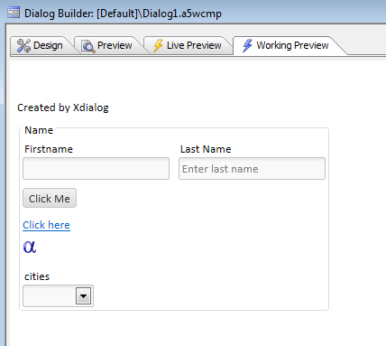

a5wcb_createDialogUsingXbasic()
Syntax
V a5wcb_createDialogUsingXbasic(P wp ,C componentName [,L flagShowProgress ])| Argument | Description |
| P wp | A dot variable with an array called .page_fields[] that has an entry for each control you want to create. |
| C componentName | The name of the component you want to create. The component will be created in the current Web Project. |
| L flagShowProgress | (optional) A flag that indicates if a progress dialog should be displayed while the function is executing. Defaults to .T. |
Description
Create a dialog component programmatically.The properties that can be used for the wp.page_fields[] array are the same as those that are displayed when you edit a Dialog component in the Builder, and switch to the Xbasic tab. Typically, you will only need to set values for properties that are different from their default values.
Limitations
Examples
dim wp as p
DIM wp.page_fields[0] as P
with wp.page_fields[]
.controltype = "layout_directive_statictext"
.v.StaticText = "Created by Xdialog"
end with
with wp.page_fields[]
.controltype = "layout_directive_FrameBegin"
.v.FrameTitle = "Name"
.v.Frame.ID = "FRAME_1"
.v.Frame.type = "Simple"
end with
with wp.page_fields[]
.v.variableName = "Firstname"
.v.breakType = "None"
end with
with wp.page_fields[]
.v.variableName = "Lastname"
.v.label = "Last Name"
.v.hasWaterMark = .t.
.v.waterMark.text = "Enter last name"
end with
with wp.page_fields[]
.controltype = "layout_directive_button"
.v.buttonText = "Click Me"
.v.javascript.onclick = "alert('click');"
end with
with wp.page_fields[]
.controltype = "layout_directive_hyperlink"
.v.hyperlinkText = "Click here"
.v.javascript.onclick = "alert('you clicked a hyperlink');"
end with
with wp.page_fields[]
.controltype = "layout_directive_image"
.v.ImageMode = "Static"
.v.javascript.onclick = "alert('click on image');"
.v.Imagename = "images/$$application.alpha.png.a5image"
end with
with wp.page_fields[] ' initialize tmpl.page_fields[9]
.controltype = "dialog_formcontrol"
.v.controlType = "DropdownBox"
.v.variableName = "cities"
.v.dropdownbox.size = 1
.v.dropdownbox.type = "Static"
.v.dropdownbox.choices = <<%str%
boston
new york
london%str%
end with
with wp.page_fields[]
.controltype = "layout_directive_FrameEnd"
end with
a5wcb_createDialogUsingXbasic(wp,"Dialog1",.t.)Here is the Dialog component created by the above code:
